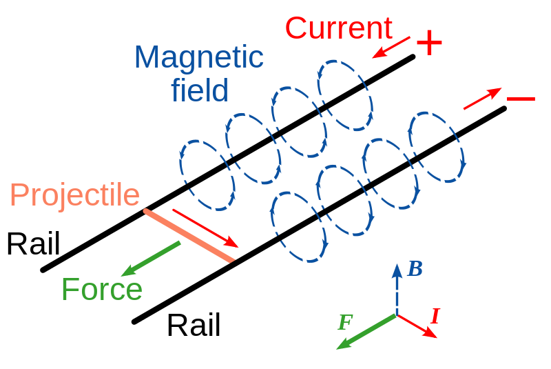

超能力 - 点子集
本章节讨论在科幻、玄幻、魔幻等等作品中出现的超能力，配合恰当的科学解释，我们可以对超能力进行二次开发或者扩展。
需要写的超能力人物列表
- 万磁王
- 炮姐
- 黑子 Kuroko Shirai
- 暴风女
远程控制物体
万磁王（Magneto）
万磁王的设定
万磁王可以控制金属物体，并且可以使得金属物体变形（从电影的特效来看，类似熔化之后的那种变形）。
在万磁王起源的片段中，巨大的铁门居然被掰弯，以及在后面的从塑料牢笼逃跑的情节中，万磁王利用从食物中获得的金属在空中飞行。
从万磁王的名字（Magneto）是跟磁有关的，因此直观的理解，万磁王通过磁场（或者说控制金属的磁性）来控制物体。考虑到电影中那种变形看似熔化，再加上控制金属物体，所以万磁王的能力很可能对于金属特有的晶格结构有关。
实际上想要远距离抓住金属，显然也应该还是电磁力的范畴（因为引力和弱相互作用太弱，而强相互作用作用距离太短）。而晶态金属特有的，能带结构算是比较重要的，因为这决定了金属的高电导率和热导率，也决定了磁性。
金属、能带与磁性
在单个的原子中，或者说在单个的球对称的势井中，我们可以计算（估算）电子的行为，结果是电子形成分立的轨道，对应不同的能级。然而金属的晶格结构中，有些电子是金属晶格共有的，也就是说，势函数变得复杂，但是却还有周期性，这使得电子的部分分离的能级之间的能量差异变得很小，而考虑到不确定性原理，这些细小的能级几乎是连续的。因此大家成为能带。
电子会优先填充低能的能级，在基态电子聚集在一些低能的能带上，这些叫做价电子，对应的能带叫做价带。而有些能带尚未被电子占满，这些能带上的电子可以自由的移动，从而导电或者导热。这样的能带叫做导带。
金属中磁性的起源是电子的自旋，因此能带上自旋向上和向下的电子的数目的差异决定了金属的磁化。
考虑到要抓住物体包括举起物体，万磁王需要控制物体的抗磁性和顺磁性或者铁磁性。而控制这些，最直接的方法就是可以控制电子的自旋。
因此，万磁王可以将一定数目的自旋翻转。而且必须是有控制的主动翻转，不然他自己就必须一直永远带极强的磁性。这解释了万磁王可以控制金属物体。
然而，这会遇到一个问题，在 豆瓣我说 与 萌萌的大使 的讨论中，涉及到了如何防止在万磁王施法的时候，不小心被附近的金属刀叉插死（施法的时候要产生磁性才能控制物体嘛，附近有刀叉就飞过来，插死自己了）。大使提到可以通过改变周围的磁导率形成一个屏蔽。
具体说来如果要屏蔽周围磁场，其中的两种方法分别是形成高磁导率的区域是的磁场主要影响自己想要影响的区域，或者在周围的铁磁性物体周围形成高磁导率区域从而对这些物体屏蔽磁场。而控制磁导率，最好是能够产生许多磁偶极子。而万磁王大多时候所能利用的只是空气，所以只能借助空气，在一个区域产生足够多的磁偶极子。
御坂美琴（Misaka Mikoto）
众宅所称炮姐。（独行以示众情敌）
炮姐总结
按照第一篇的经验呢，似乎很多人说读不懂。因此我增加了总结部分，不想读下面的讨论内容，读完这一部分之后可以关掉页面。
- 炮姐电磁炮的原理就是炮姐利用电流产生磁场，然后在硬币内产生电流，电流在磁场中受到 Lorentz 力的作用，从而被发射出去。
- 炮姐发射一枚硬币所需要的能量最多吃五只半水煮蛋就可以补回来了。如果吃不够呢，可能会产生贫乳。
- 炮姐要解决胸部问题，可以在获得足够好的微操做技能之后，控制胸部新陈代谢，加快脂肪积累。
- 脑洞：除了发射硬币、发射大铁块、攀岩走壁、轻功水上漂、给手机充电、黑掉豆瓣服务器，炮姐还可能间接操纵引力，徒手提取旋转黑洞能量，打败万磁王。
炮姐原理
按照设定炮姐所控制的是电力，然而由于电与磁的耦合，所以炮姐实际上可以控制电磁场。而我们日常生活中绝大多数物理化学生物现象都是电磁场的作用，这从一个侧面显示了炮姐的能力的厉害之处。
电与磁的耦合
这并不需要解释，因为大家都知道 Maxwell 方程组，也就是电磁耦合的方程组。即便不知道这个方程组，也知道我们用的大部分电动机和发电机是利用了电和磁的耦合。
我这里想要解释的是，实际上物理而言电除了跟磁耦合，还跟引力耦合，也跟弱相互作用（核衰变，中微子与水相互作用等）耦合。也就是说，原则上而言，炮姐可以借助这些耦合来控制引力和弱相互作用。
然而问题在于，这些耦合都非常弱，倘若要利用电磁场产生巨大的引力，那所需要的能量之巨大显然是难以想象的。
电磁炮是炮姐的招牌攻击。发射电磁炮有几种不同的方式。一种是跟名字 Railgun 相吻合的，就是电磁轨道炮原理。
还有一种是利用电磁波来推动物体，跟太阳帆的原理是类似的，显然这是一种更加不合理的方式。所以我们假定炮姐发射硬币的原理跟电磁轨道炮一致。
电磁炮（摘选自 我在果壳问答的回答 ）

两根导电轨道，再横着放一根导电轨道上去，这样就构成了一个电磁炮。在两根平行导电轨道上接通电流，这样横向的导电体上面就有了电流，然后由于两根平行轨道上面的电流可以产生磁场，这样一来就有了洛伦兹力，从而可以推动横向导电体运动。
显然电流越大，横向导电体收到的力越大，从而总轨道长度确定的情况下，最终输出能量越大（W=FL），对应于炮弹出口速度越大。
原理上来说，只要我们提供足够的电流和轨道长度，就会具有远大于现在火炮的杀伤力。
在“水之翼”这种招式之中，炮姐可以将空气中大量水分子聚集起来，并且仔细安排电场使得水形成短翼，并且利用水的极性将水喷出，从而凌空飞行。这是怎么做到的呢？秘密在于水分子是有极性的。这就像磁铁在磁场中受到力的作用一样，极性的水分子在不均匀的电场中也会受到力的作用，因为水分子的两极受到的力不同。所以炮姐只需要产生一个不均匀的电场就可以了。
然而，炮姐“水之翼”招式还有另外的一种解释。假定炮姐放电电人的时候是高压击穿空气，那么要击穿一米的空气需要 1000 千伏的电压，而炮姐的能力显然是远超过击穿一米空气的。所以炮姐具备产生高压的能力。这样的能力实际上除了能够利用水分子极性来移动分子，还可以电离产生等离子体，从而进行离子推进。或许炮姐在使用这招的时候身后的蓝色火焰就是等离子体产生的。
炮姐绝不是简单的发电机这么简单，她可以对电场进行很有情怀的控制，非常详细地、直接地控制电场分布。
炮姐才不会胖
简单的估算发现炮姐的功率至少可以达到一千兆瓦。这是什么概念呢？这相当于航天飞机飞射功率的十二分之一，或者波音 747 喷气式飞机上一个 GE90 发动机最大功率的十三倍。
所以你们下一个关心的问题是什么呢？当然是炮姐要吃多少才能补回来这些使用掉的能量。
炮姐有多能吃
炮姐发射显然是不需要轨道的，她只需要产生两道电流即可。已知炮姐发射的硬币的初速度约为 3 马赫（343*3米每秒≈1000米每秒），假定硬币为七克，然后假定电导密度还是 0.6 mH/m（这里已经不太合理了，因为炮姐不需要轨道，因此仅为估算），等效轨道长度为一米，我们可以估算炮姐发射这枚硬币需要的电流值 2800 安培，保留量级的话就是说要有一千安培电流这样的量级。
上面的模型的话，炮姐功率至少可以达到一千兆瓦，而发射时间可以算得是 1/500 s。这样就是说发射一枚硬币消耗的能量是 $2\times 10^6 \mathrm{J}$。这对应于 478 千卡，或者对应于大约五个半水煮蛋的热量了。
这给出了一个上限，因为炮姐的轨道炮要比我们现实中的轨道炮高效的多。
同时我们也可以看看下限。作为估算，我们忽略轨道炮的能量损耗，仅仅考虑硬币飞出去所需要的能量，并把这部分能量对应成鸡蛋数量。发射一次五百日圆（七克）硬币，如果初速度达到三马赫，也就是对应一千米每秒的初速度，那么这个初动能对应的是三千五百焦耳的能量，对应的不到一千卡。进一步估算的话，炮姐吃一个水煮蛋可以发射大约一百个硬币。
这个下限显然基本上等价于无下限。
结合起来，炮姐发射一枚硬币大约需要一百分之一个鸡蛋到五个半水煮蛋的热量之间。
这样来说的话，炮姐胸部发育不好是不是因为发射硬币导致的能量不足引起的呢？
炮姐升级计划——炮姐核聚变
当我在思考炮姐胸部问题的时候，与致谢中几位聊天时，大家突然提到了炮姐核聚变。那么核聚变可以拯救炮姐的胸部么？
核聚变的发生是需要克服很多困难的，其中比较重要的一个是库仑势垒。设想一堆带正电的质子，他们要相互靠的足够近才能融合在一起（借助量子隧穿）。然而一堆带正电的质子是相互排斥对方的，同性相斥嘛。所以核聚变发生需要克服这个同性相斥的库伦势垒。
然而炮姐是可以安排电场分布的，倘若炮姐借助自己强大的能力，将氢离子分离出来，并且借助磁场束缚在一个区域内。然后（通过叠加电场分布）修改质子核聚变时所需要克服的库伦势垒，使得两个质子更容易相互接近，发生聚变。这样提取出来能量，为自己发射电磁波所用。倘若合理安排可以要较少的输入获取较多的输出能量，那么炮姐就实现了炮姐核聚变。借助这聚变的能量，发射电磁炮不再需要消耗水煮蛋的热量，那么胸部发育就不再被拖累。
这样，炮姐只需要发射电磁炮之前或之后喝杯水，胸部从此傲人挺立。
炮姐升级计划——专业丰胸
炮姐实际上上面要求炮姐具有非常好的微操功底。在足够的练习之后，炮姐的微操做变得足够安全足够准确。那么我们也让炮姐来做一回闪电侠吧。
人体的新陈代谢依赖的还是电磁相互作用。蛋白质折叠，酶的电场分布，氧化还原等等。炮姐仔细对体内的这些过程进行微操做，例如加快电离过程，可以加快化学反应，从而控制体内代谢的快慢。当然了，计算量如此之大，炮姐可能需要 Tree Diagram 的协助了。但原则上可以通过加快新陈代谢做一回闪电侠。
等一下，炮姐这么优雅的身姿，怎么能去做闪电侠呢？炮姐要借助树状图来加快胸部脂肪积累，从而达到丰胸的目的。
炮姐玩引力
炮姐玩引力需要多少能量
如果我们让炮姐玩引力的话，下面是估算。
这里对应的公式是广义相对论里面的场方程。1 基本上而言， $\frac{1}{2}(\epsilon_0 E^2+B^2/\mu_0)$ 是能量密度，作为一个估算，我们可以分析一下量纲。结果是如果产生相当于水的引力势能的话，按照量纲估算，需要产生的电场强度为 $10^{15}\mathrm{V/m}$。而击穿空气所需的电压量级上也不过是 $10^6\mathrm{V/m}$。炮姐要在每立方厘米内产生 1 后面 25 个零这么多焦耳的能量，也就是说，要在一立方厘米之内产生 1 克水相同的效应，炮姐要消耗掉大约 1 后面 21 个零这么多千卡的热量，如果要维持平衡，就要吃掉这么多热量，如果对应的是大鸡蛋的话，要吃掉 1 后面 19 个零这么多个鸡蛋。好撑。
致谢
参考与尾注
- 500日元的重量：
关于日元硬币的小知识 <http://jandan.net/2013/11/30/japanese-coins.html>_ - 维基百科词条：
御坂美琴 <http://zh.wikipedia.org/zh-cn/%E5%BE%A1%E5%9D%82%E7%BE%8E%E7%90%B4>_ - 食物热量：
食物热量表 <http://baike.baidu.com/view/1298540.htm#2_3>_